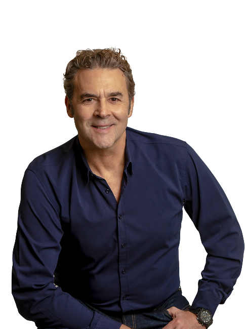

Quero entender o que estou sentindo
Uma primeira avaliação para investigar sintomas e esclarecer dúvidas.
EXPERIÊNCIA QUE ACOLHE
Psiquiatria com escuta atenta e cuidado individualizado. Compreender sua história é o primeiro passo para construir o seu tratamento.
Atendimento particular · Online e em Florianópolis
O centro do atendimento
continua sendo você.
30+Anos de prática clínica
Corpo clínicoHospital Israelita Albert Einstein
Medicina de precisãoApoio ao cuidado individualizado
SEU PONTO DE PARTIDA
Você não precisa ter todas as respostas para buscar uma avaliação.
Ansiedade persistente, tristeza, oscilações de humor, dificuldades de concentração ou alterações no sono podem motivar uma conversa com o psiquiatra.
Uma primeira avaliação para investigar sintomas e esclarecer dúvidas.
Um olhar atento para o histórico, as respostas e as dificuldades ao longo do cuidado.
Continuidade para avaliar a evolução e discutir os próximos passos.

DR. GUIDO BOABAID MAYTRAJETÓRIA & PRESENÇA
Médico psiquiatra e psicoterapeuta, o Dr. Guido acompanha há mais de três décadas pessoas com diferentes histórias, necessidades e desafios.
Sua prática reúne experiência clínica, escuta e conhecimentos da medicina de precisão para avaliar cada caso e discutir as possibilidades de tratamento com clareza.
COMO FUNCIONA
A consulta considera os sintomas e o contexto em que eles aparecem. Cada etapa ajuda a orientar as decisões seguintes.
Sintomas, rotina, histórico de saúde, tratamentos anteriores e suas expectativas.
Investigação clínica para compreender o quadro e discutir necessidades de avaliação complementar.
Possibilidades de cuidado explicadas com clareza, incluindo abordagens medicamentosas e não medicamentosas.
Revisões e ajustes orientados pela evolução clínica e pelas necessidades de cada pessoa.
PERTO, MESMO À DISTÂNCIA
Atendimento por teleconsulta, com avaliação da adequação dessa modalidade para cada caso.
Atendimento no consultório, em um ambiente reservado para a avaliação clínica.
Consultas particulares. Informe-se com a equipe sobre valores e disponibilidade.
CIÊNCIA A SERVIÇO DO CUIDADO
A medicina de precisão pode apoiar decisões mais individualizadas. Em situações selecionadas, a farmacogenética ajuda a avaliar como variações genéticas influenciam a metabolização ou a resposta a alguns medicamentos.
Quando indicada, essa informação é analisada junto à história clínica. O exame não é obrigatório, não substitui a consulta e não garante resultados.
MINUTO
SAÚDE MENTAL
TALVEZ VOCÊ JÁ CONHEÇA ESTA VOZ
No quadro Minuto Saúde Mental, veiculado pela Jovem Pan News, o Dr. Guido compartilha informações sobre psiquiatria e cuidado emocional. Aqui, você conhece também sua forma de atendimento.
ANTES DE AGENDAR
Sim. Há atendimento por teleconsulta para pacientes em diferentes regiões do Brasil, conforme a adequação clínica de cada caso. A equipe explica como funciona.
No consultório em Florianópolis, Santa Catarina. A equipe informa o endereço e as orientações para sua visita.
As consultas são particulares. Entre em contato para informações sobre valores e disponibilidade.
Não. A consulta também pode ser o momento de investigar sintomas e esclarecer dúvidas sobre sua saúde mental.
Não. A utilidade de exames complementares é avaliada individualmente, quando houver indicação clínica.
Clique em um dos botões de agendamento. A equipe atenderá pelo WhatsApp para orientar sobre modalidades, horários e próximos passos.
VAMOS CONVERSAR?
Conheça o atendimento e tire suas dúvidas.
Nossa equipe orienta você nos próximos passos.
Particular · Online para o Brasil · Presencial em Florianópolis